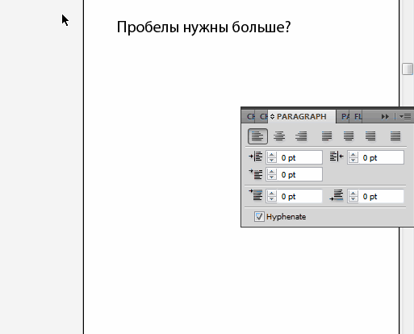

Изменить размер пробела между словами
Alex000r / 13.10.2010, 16:34/00:41
Форум:
ест, допустим, много текста. возможно ли (как в Corel) менять расстояние не только между символами, но и отдельно между словами во всем тексте.
ест, допустим, много текста. возможно ли (как в Corel) менять расстояние не только между символами, но и отдельно между словами во всем тексте.
Как в Corel-е врятли, если только по отдельности, но можно настроить по умолчанию интерлиньяж с помощью Justification - Auto Leading
Тогда и межбуквнные промежутки изменятся на ту же величину
Можно если текст не очень большой ,полуавтаматом ускорить процесс.Для этого
1.записать простенький Action увеличивающий расстояне между словами на заданный промежуток.
2.Инструментом Tape Tool ткнуть в начало текста и нажать Ctrl -> \стрелка вправо\ тогда курсор передвинется в начало следующего слова.
3.Проигрываем Action.
4.Ctrl -> и так весь текст.
Можно в файле шрифта изменить величину пробела и не тыкать в каждое слово. Такой модифицированный шрифт с увеличенным пробелом будет работать одинаково и в CDR, и в AI, и в Word, но только на вашем компьютере. Чтобы также всё отразилось на другом компьютере – в PDF.
Тоже замечал, что в шрифте Times New Roman пробел бессовестно маленький. Иначе и не назовёшь.
легко...

Как если текст уже напечатан?
не видел ответа,действительно легко.
Комментарии "не о чём" удалил!